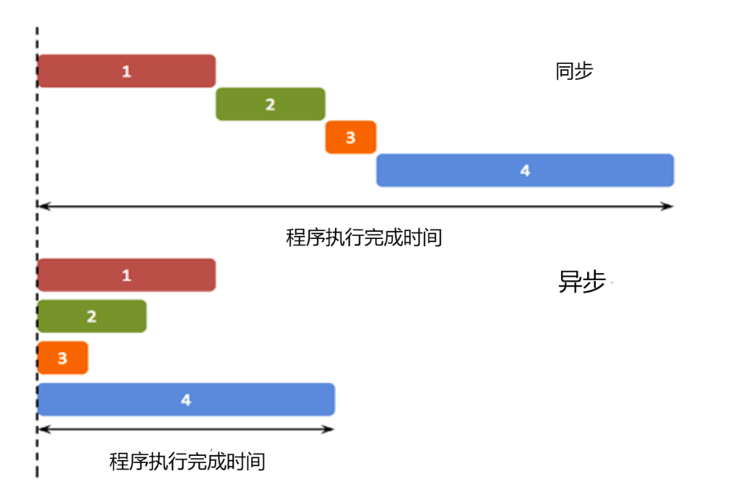

JavaScript 语言的异步编程是指在执行某个任务时，主线程（即当前正在执行的 JavaScript 代码）并不会被阻塞， 而是继续执行后续代码，待任务完成后再通知主线程。这样可以提高程序的响应速度，适用于那些耗时较长的操作。 异步编程的实现方式有多种，常见的有回调函数、事件监听、Promise 对象、Generator 函数等。 本文将介绍 JavaScript 异步编程的基本概念和常用方法。
异步编程的使用场景主要有以下几种：
下面是一个异步编程的例子，使用 setTimeout 函数模拟一个延迟 5 秒的异步操作：
子线程设置的定时器，与主线程执行不存在必然关系。